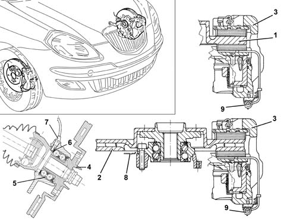

3310A FRONT DISC BRAKES
- Path
- Descriptions > 33 BRAKING SYSTEM > 3310 DISC BRAKES > 3310A FRONT DISC BRAKES
- Kind
- system description
- Applies to
- all engines; all production periods
- Interactive page
- https://sloeber94.github.io/elrnDB-lYpsln/en/#/2427417
Applies to: all engines; all production periods
Different vehicle configurations have been adopted on the vehicle in view of weight and power differences between different versions:
- basic versions come with 257x12mm solid discs at the front and floating 48 mm brake calipers with automatic play take-up
- 1.4 16V/JTD/1.2 16V come with 257 x 22 mm ventilated discs at the front and 54 brake calipers.
- all vehicle versions come with floating cast iron calipers with automatic play take-up
A multipolar magnetic ring fitted to the inner hub bearing race indicates wheel movement to the active ABS sensor [3340 A(B.S. ANTI-LOCK BRAKING SYSTEM .)]

1 - Brake disc 2 - Ventilated brake disc 3 - Brake caliper 4 - Hub 5 - Hub bearing 6 - Magnetic ring 7 - Active ABS sensor 8 - Guard 9 - Pad wear warning light connection